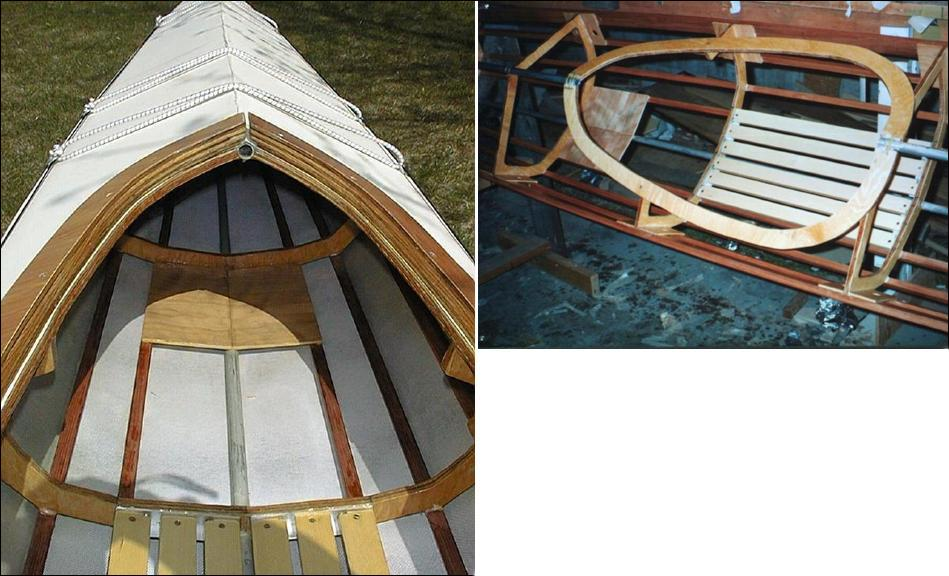

Screw / Glue Frame
Menu
Previous Page
Next Page

This Baidarka uses a combination of wood and aluminum stringers ( keel and deckridge). They are lashed/ glued and the wood stringers are screwed / glued.